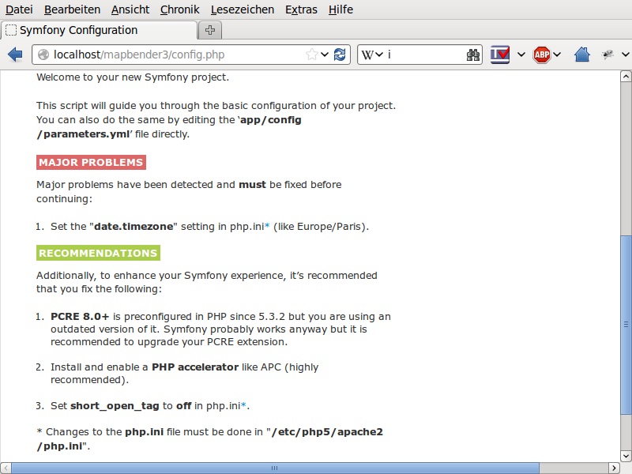

Installation on Windows¶
Please take note of the system requirements where you can also find the Download links to Mapbender3. Install the neccessary components:
- add the path to your PHP-bin directory to the PATH variable
- activate the PHP extensions in your php.ini configuration file
- load the Apache module rewrite
# php.ini
extension=php_curl.dll
extension=php_fileinfo.dll
extension=php_gd2.dll
extension=php_intl.dll
extension=php_pdo_pgsql.dll
extension=php_pdo_sqlite.dll
extension=php_pgsql.dll
extension=php_openssl.dll
extension=php_mbstring.dll
For development:
# php.ini
extension=php_bz2.dll
Additional for PHP 7:
# php.ini
extension=php_zip.dll
extension=php_bz2.dll
# Windows: edit file httpd.conf (remove the comment-sign #) and restart apache
LoadModule rewrite_module modules/mod_rewrite.so
Create the Apache alias. In Windows there are several ways. A clear way is to create a file mapbender3.conf and to refer to that file in Apaches httpd.conf
- Create a subfolder “alias” in the directory “<apache>/conf”. Create the mapbender3.conf file there. (You can use this directory to place additional Alias definition-files for other sites there.)
- In the httpd.conf (in directory <apache>/conf/)refer to this file mapbender3.conf
In httpd.conf:
# Refer to Mapbender3 alias
Include "conf/alias/mapbender3.conf"
In mapbender3.conf:
Alias /mapbender3 c:/mapbender3/web/
<Directory c:/mapbender3/web/>
Options MultiViews FollowSymLinks
DirectoryIndex app.php
Require all granted
RewriteEngine On
RewriteBase /mapbender3/
RewriteCond %{REQUEST_FILENAME} !-f
RewriteRule ^(.*)$ app.php [QSA,L]
</Directory>
We assume in this example, that Mapbender3 is unzipped directy under C:/ (see the System Requirements and Download chapter for details). You can easily choose a different directory and have to adjust the Apache mapbender3.conf file above to the right location.
Restart the Apache webserver.
Optional features¶
The following steps may lead to a better performance under some Windows installations.
SASS Compiler¶
The SASS compiler is part of Mapbender since version 3.0.5 and contains und contains a filter since version 3.0.6.0 which makes sure that the generated CSS statements are stored in a temporary file instead of delivering it out in a pipe.
mod_fcgid¶
“mod_fcgid” is an Apache handler that is recommended for Windows Installations with Apache, because server requests can be executed parallel. These instructions are an offer for your deployment, although many other varaiants exist, which we cannot cover in this documentation.
The common way to register PHP in Apache is as a module:
# LoadModule php5_module "c:/bin/php/5.6.30/php5apache2_4.dll"
# AddHandler application/x-httpd-php .php
# configure the path to php.ini
# PHPIniDir "c:/bin/php/5.6.30"
This way is substituded with the FCGID method. It needs some preparation since them module is not shipped with Apache installations out of the box.
- Website: https://httpd.apache.org/mod_fcgid/
- Download for Windows (VC 11, please mind your dependencies): https://www.apachelounge.com/download/VC11/ and there the modules-...zip file.
- Unzip the mod_fcgid.so file from the archive into the module-directory of Apache.
Adjust the httpd.conf:
# FCGI
LoadModule fcgid_module "modules/mod_fcgid.so"
FcgidInitialEnv PHPRC "c:/bin/php/5.6.30"
AddHandler fcgid-script .php
FcgidWrapper "c:/bin/php/5.6.30/php-cgi.exe" .php
In the Mapbender-Apache-Site file (mapbender.conf), add the “ExecCGI” parameter, for example:
<Directory c:/srv/mapbender3-starter-3.0.6.0/web/>
[...]
Options MultiViews FollowSymLinks ExecCGI
[...]
</Directory>
WinCache PHP (optional)¶
The Windows Cache Extension for PHP is a PHP accelerator that is used to increase the speed of PHP applications running on Windows and Windows Server. The extension included PHP opcode cache, user data cache, session cache, file system cache and relative path cache.
Further information under:
- https://www.iis.net/downloads/microsoft/wincache-extension
- https://sourceforge.net/projects/wincache/
WinCache Installation
- Download: https://sourceforge.net/projects/wincache/
- The download is shipped as a self-extracting archive (.exe).
To install and enable the extension, use the following steps:
Unpack the package that is appropriate for the PHP version you are using.
Copy the php_wincache.dll file into the PHP extensions folder. Typically this folder is called "ext" and it is located in the same folder with all PHP binary files. For example:
"C:\Program Files\PHP\ext".
Using a text editor, open the php.ini file, which is usually located in the same folder where all PHP binary files are. For example:
"C:\Program Files\PHP\php.ini".
Add the following line at the end of the php.ini file:
extension = php_wincache.dll
Save and close the php.ini file.
set session.handler to WinCache:
To change the location of the session file use session.save_path directive.
sesion.save_handler = wincache
session.save_path = C:\inetpub\tmp\session\
activate wincache.reroute_enabled
The reroutes are not enabled by default. To enable them, set the reroute_enabled directive in either the php.ini or the .user.ini.
wincache.reroute_enabled = 1
OpCache (optional)¶
OPCache is a PHP-extension which is delievered with PHP since version 5.5.5. but is not activated by default.
More info: https://www.sitepoint.com/understanding-opcache/
OPCache installation
In php.ini:
[opcache]
; Pfad zur php_opcache.dll
zend_extension=C:/bin/php/5.6.30/ext/php_opcache.dll
; Determines if Zend OPCache is enabled
opcache.enable=1
; Determines if Zend OPCache is enabled for the CLI version of PHP
;opcache.enable_cli=0
; The OPcache shared memory storage size.
opcache.memory_consumption=64
; The amount of memory for interned strings in Mbytes.
opcache.interned_strings_buffer=4
; The maximum number of keys (scripts) in the OPcache hash table.
; Only numbers between 200 and 100000 are allowed.
opcache.max_accelerated_files=2000
; The maximum percentage of "wasted" memory until a restart is scheduled.
opcache.max_wasted_percentage=5
Symfony recommends, to increase the opcache.max_accelerated_files value: http://symfony.com/doc/3.1/performance.html#optimizing-all-the-files-used-by-symfony
Check¶
Check that the Alias is accessible:
Open Symfony´s Welcome Script config.php. This script checks whether all necessary components are installed and configurations are done. If there are still problems, you should fix them.
{kind=link}
Adapt the Mapbender3 configuration file parameters.yml (app/config/parameters.yml) and define the database you want to create. Further information is available in the chapter Configuring the database.
database_driver: pdo_pgsql
database_host: localhost
database_port: 5432
database_name: mapbender3
database_path: ~
database_user: postgres
database_password: secret
Run the app/console commands with php. First you have to open a terminal (cmd).
c:
cd mapbender3
php.exe app/console doctrine:database:create
php.exe app/console doctrine:schema:create
php.exe app/console assets:install web
php.exe app/console fom:user:resetroot
php.exe app/console doctrine:fixtures:load --fixtures=./mapbender/src/Mapbender/CoreBundle/DataFixtures/ORM/Epsg/ --append
php.exe app/console doctrine:fixtures:load --fixtures=./mapbender/src/Mapbender/CoreBundle/DataFixtures/ORM/Application/ --append
Installation of Mapbender3 is done.
Check the config.php again:
You can start using Mapbender3 now. You can open the developer mode when you run app_dev.php.
Notice: Go to the login link at the right-top and log in with the new user you created.
To learn more about Mapbender3 have a look at the Mapbender3 Quickstart.